Image-to-Image
Input
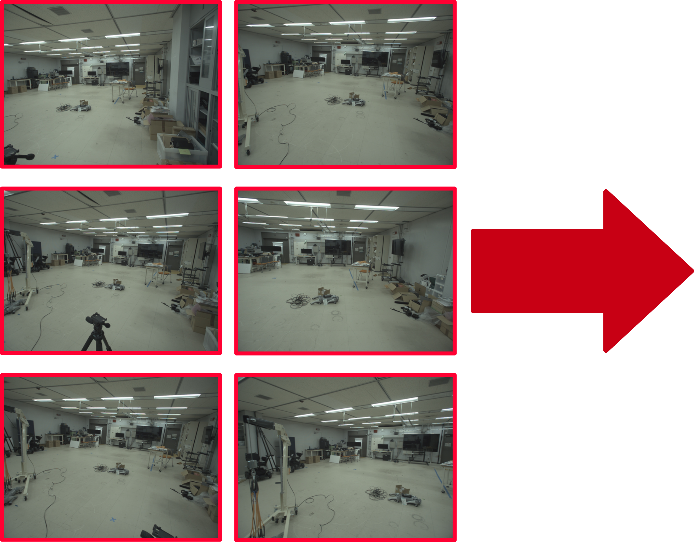
Result
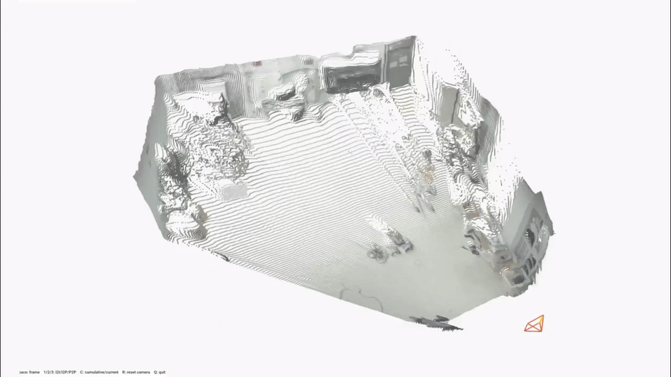
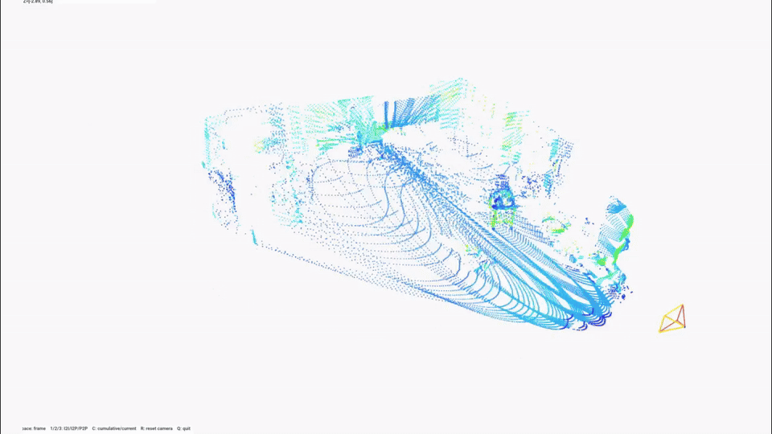
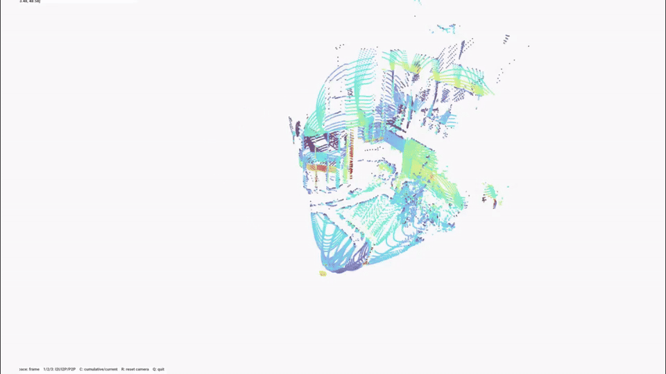
This paper presents LiV3R, a unified feed-forward registration model that supports both RGB camera and LiDAR inputs. LiV3R builds upon MapAnything, a feed-forward transformer-based 3D reconstruction model, and adapts its strong geometric reasoning capability to LiDAR observations. To enable LiDAR adaptation without requiring large-scale image--LiDAR pair datasets, we introduce a cost-efficient training strategy that first pretrains the model using pseudo-LiDAR data generated from existing RGB-D datasets and then fine-tunes it on a relatively small amount of real LiDAR data. We further introduce a dedicated LiDAR encoder that jointly encodes intensity, geometric cues, and sparsity information into the shared feature space. Through extensive ablation studies, we show that early injection of LiDAR sparsity, combined with joint encoding of intensity and geometric cues, yields effective LiDAR representations for registration. LiV3R directly estimates relative sensor poses in a single forward pass without explicit cross-modal correspondence search or pose estimation, and supports arbitrary pairs of image and point cloud inputs within a single model. Experiments on the R$^3$LIVE dataset demonstrate registration accuracy competitive with task-specific methods.
Given $N$ inputs comprising RGB images, LiDAR point clouds, and optional geometric cues, LiV3R projects each modality into a shared latent space using modality-specific encoders. Each LiDAR scan is preprocessed into a single-channel intensity image together with ray directions, depth, and a sparsity mask; these signals are stacked and jointly fed into the LiDAR encoder. We investigate four LiDAR encoding variants, shown in (a)–(d), to identify the most effective way to incorporate intensity, geometry, and sparsity.
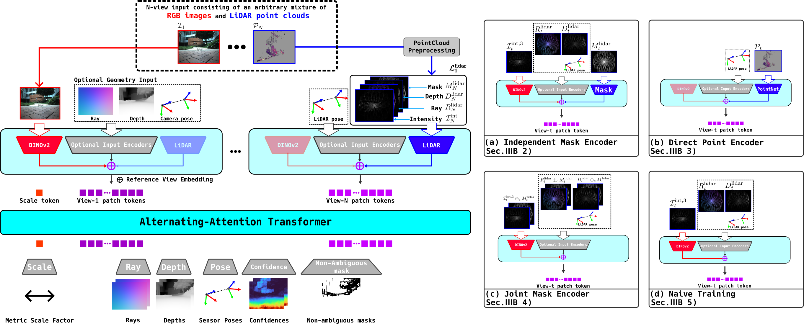


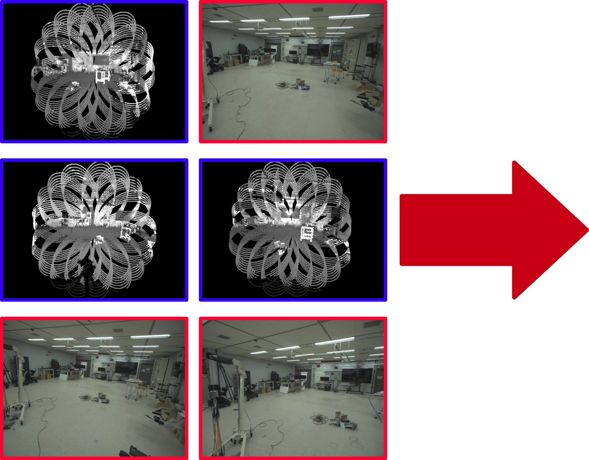
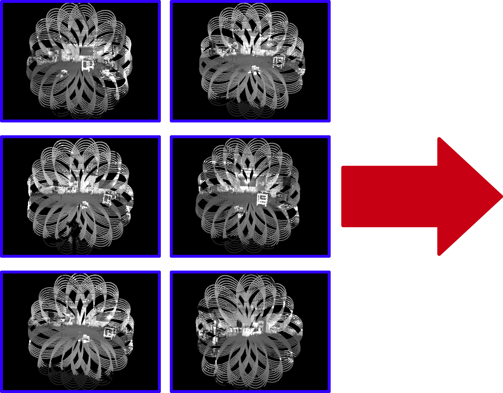
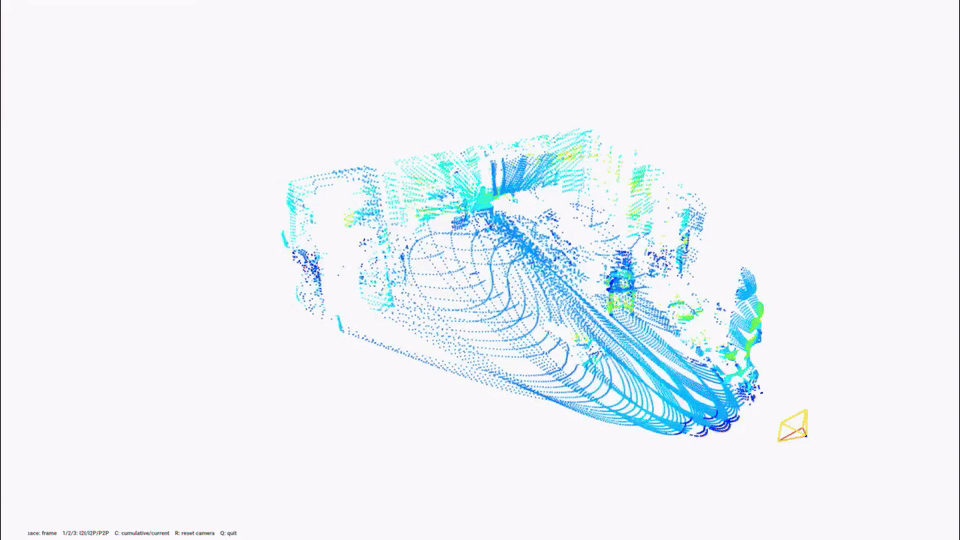
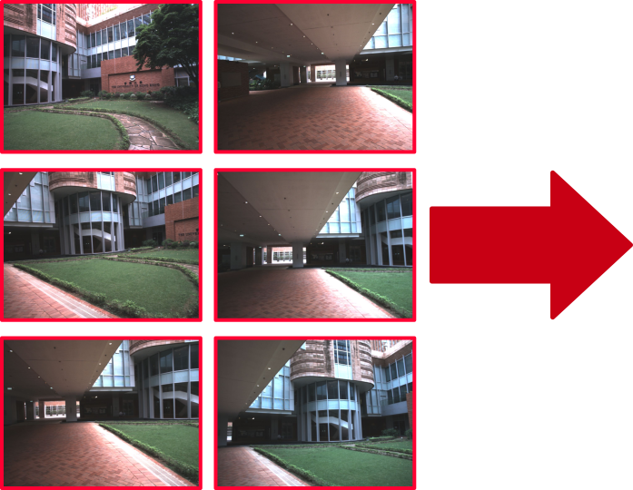
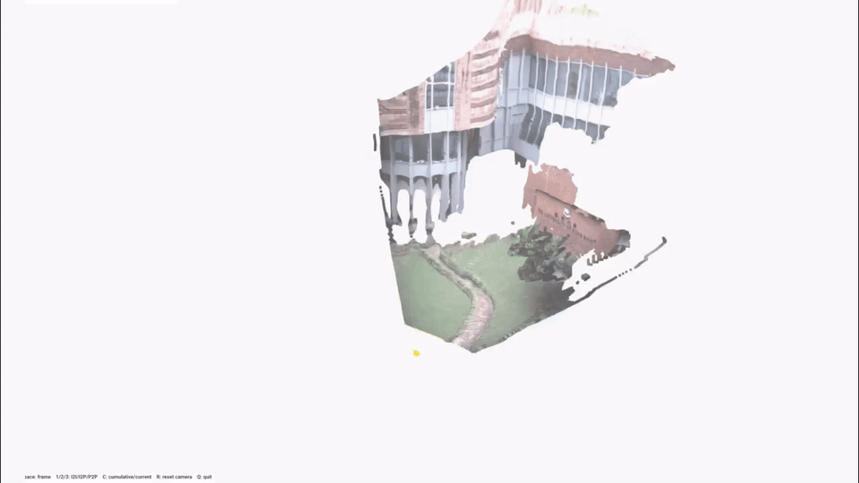
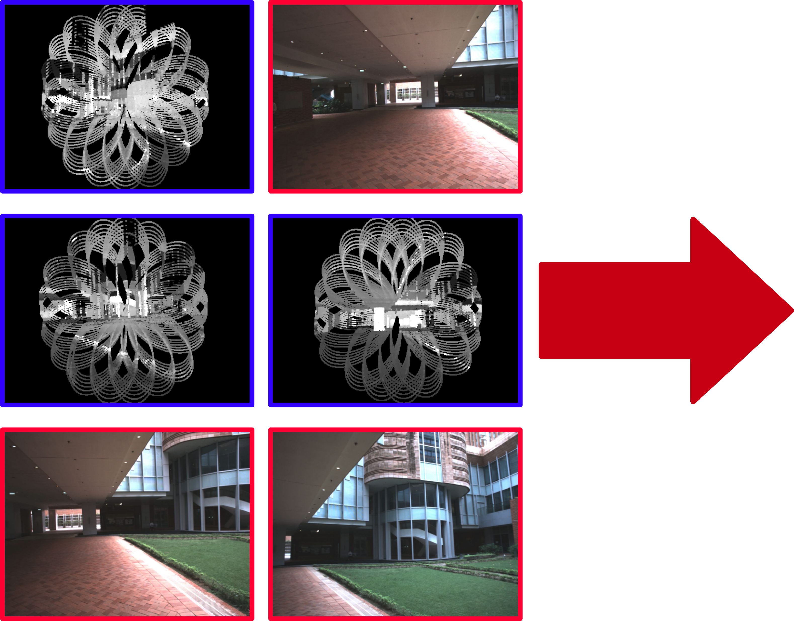
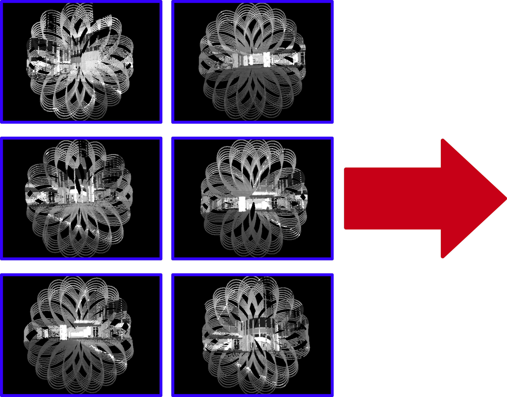
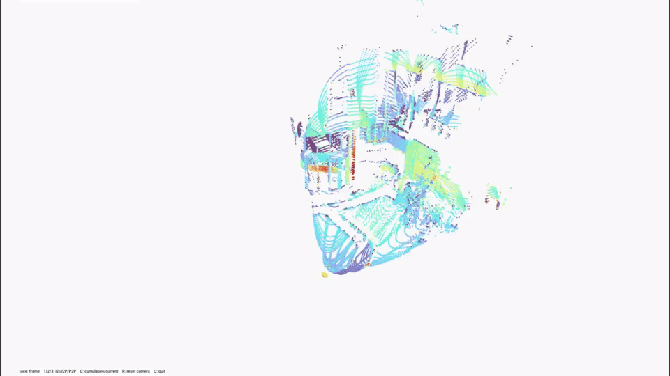